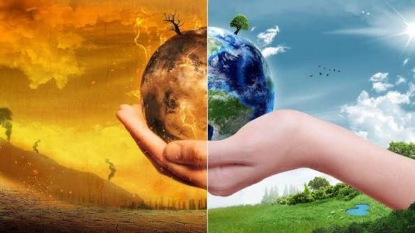

Por: Nome do Autor
Texto da curiosidade tecnológica aqui.
">O meio ambiente é o conjunto de elementos físicos, químicos, biológicos e sociais que abrigam e mantêm a vida na Terra.
Elementos vivos (bióticos): Animais, plantas, fungos, microrganismos e os seres humanos. Elementos não vivos (abióticos): Água, solo, ar, luz solar, rochas e minerais. Dimensões sociais e econômicas: Cidades, infraestruturas, culturas e relações econômicas que moldam as esferas de convivência..
Manutenção da vida: Fornece recursos essenciais como oxigênio, água limpa e alimentos para todas as espécies. Equilíbrio climático: Florestas e oceanos regulam o clima global e atenuam eventos extremos. Sustentabilidade: Práticas corretas garantem o bem-estar e a sobrevivência das gerações futuras sem esgotar os recursos do planeta.
O meio ambiente é o sistema global complexo que sustenta a vida na Terra. Ele é composto pela interação de elementos naturais (como água, ar, solo, plantas e animais) e elementos artificiais ou transformados (como cidades e infraestruturas), além das relações sociais e culturais humanas.